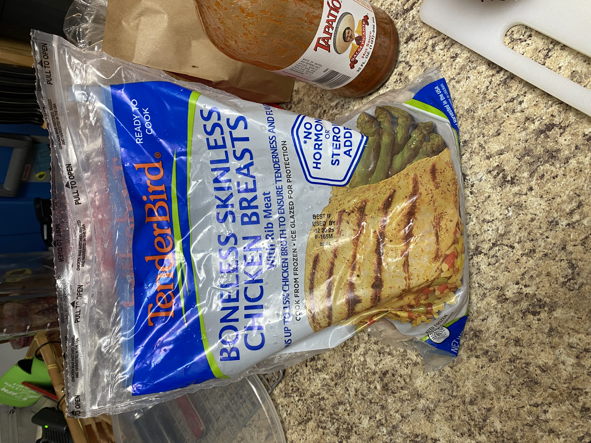

Simple Tacos
This recipe is affordable, delicious and healthy. You need 1 $5 3lb bag of chicken (I buy mine from winco).
You also need a carton of mushrooms, cabbage, 3 jalepenos, bell peppers, corn tortillas, cheese, some tomatoes, and red onions.
Don't forget taco seasoning, salt, pepper, red pepper flakes.
You meal prep this and are able to eat quickly throughout the week.
- Corn tortillas
- Cabbage
- Chicken Breast/Protien
- Jalepenos
- Bell Peppers
- Mushrooms
- Cheese
- Red Onions
- Tomatoes
- Tapatio/Hot Sauce
- Taco Seasoning
- Red Pepper Flakes
- Salt
- Pepper

- Make money to buy your own food or grow and raise all your food. I'll will not dive into these steps.
- Go and purchase your food from the grocery store.
- Bring it home.
- Cook your food.
- Give thanks to God for your food.
- Then eat your food.
- Enjoy your life, you now shouldn't be hungry for a few hours.
- Sometime later you'll poop your food.
- Repeate these steps all the days of your life on this Earth in your mortal frame.
- Chop up jalepenos and bell peppers. Add mushrooms to the pan with the bell peppers and jalepenos.
Season with salt and pepper. Cook on medium-high for 10 minutes or so till they start to char a bit.
- Defrost chicken in warm water, then chop into chuncks. Place in pan with everything else.
Season with red pepper flakes and Taco Seasoning. Add a cup of water. Continue to cook and stir occassionaly
on the medium high heat. It's done when all the water has evaporated in the pan. Then place chicken in Tupperware.
- Chop up your tomatoes, red onions, and cabbage and place them in their own tupperwares.
- To plate I like to place my tortialls down, then cabbage. Then the chicken, then the shredded cheese.
- Microwave for 1min30sec so cheese melts. Then add your chopped onions and tomatoes.
- Douse your dish in Tapatio.
- Enjoy!